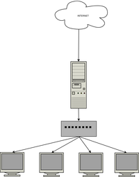

KestrelHPC
Archivierte Anleitung
Dieser Artikel wurde archiviert, da er - oder Teile daraus - nur noch unter einer älteren Ubuntu-Version nutzbar ist. Diese Anleitung wird vom Wiki-Team weder auf Richtigkeit überprüft noch anderweitig gepflegt. Zusätzlich wurde der Artikel für weitere Änderungen gesperrt.
Artikel für fortgeschrittene Anwender
Dieser Artikel erfordert mehr Erfahrung im Umgang mit Linux und ist daher nur für fortgeschrittene Benutzer gedacht.
Zum Verständnis dieses Artikels sind folgende Seiten hilfreich:
KestrelHPC  ist ein einfacher High Performance Computing Cluster (Diskless), dessen Knoten (Nodes) per PXE-Boot schnell eingebunden werden können. Das System basiert auf PelicanHPC .
ist ein einfacher High Performance Computing Cluster (Diskless), dessen Knoten (Nodes) per PXE-Boot schnell eingebunden werden können. Das System basiert auf PelicanHPC .
Der Server benötigt minimal ein Netzwerkinterface. Es empfiehlt sich jedoch, zwei Netzwerkinterfaces zu nutzen, um die Effizienz zu steigern. Außerdem ist für ein wirkungsvolles Arbeiten Gigabit-LAN empfehlenswert. In der Regel befindet sich zwischen den Knoten und dem Server ein Switch. Es ist jedoch auch möglich, mehrere Server unter dem Hauptserver zu verwenden. Zum PXE-Boot wird Dnsmasq verwendet.
Experten-Info:
Wenn mehrere DHCP-Server auf dem Server laufen, sollte man darauf achten, dass die Konfigurationen u.U. angepasst werden müssen.
Installation¶
Das Projekt unterstützt momentan (Stand: 06/2012) Ubuntu 10.04 und 11.04. Da es nicht in den offiziellen Paketquellen enthalten ist, muss zur Installation zuerst ein "Personal Package Archiv" (PPA) aktiviert werden [1].
Adresszeile zum Hinzufügen des PPAs:
ppa:kestrel/kestrelhpc
Hinweis!
Zusätzliche Fremdquellen können das System gefährden.
Ein PPA unterstützt nicht zwangsläufig alle Ubuntu-Versionen. Weitere Informationen sind der  PPA-Beschreibung des Eigentümers/Teams kestrel zu entnehmen.
PPA-Beschreibung des Eigentümers/Teams kestrel zu entnehmen.
Damit Pakete aus dem PPA genutzt werden können, müssen die Paketquellen neu eingelesen werden.
Nach dem Aktualisieren der Paketquellen kann man KestrelHPC installieren [2]:
kestrelhpc (ppa )
kestrelhpc-ganglia (ppa)
kestrelhpc-openmpi (ppa)
 mit apturl
mit apturl
Paketliste zum Kopieren:
sudo apt-get install kestrelhpc kestrelhpc-ganglia kestrelhpc-openmpi
sudo aptitude install kestrelhpc kestrelhpc-ganglia kestrelhpc-openmpi
Paketliste zum Kopieren:
sudo apt-get install kestrelhpc kestrelhpc-ganglia kestrelhpc-openmpi
sudo aptitude install kestrelhpc kestrelhpc-ganglia kestrelhpc-openmpi
Hinweis:
Aufgrund der ständigen Weiterentwicklung wird empfohlen, regelmäßige Updates durchzuführen.
Einrichtung¶
|  |
| Einfache Darstellung eines HPC |
Zuerst muss mit einem Editor [3] und Root-Rechten [4] die Konfigurationsdatei /etc/kestrel/kestrel.conf den eigenen Bedürfnissen angepasst werden.
1 2 3 4 5 6 7 | # Frontend's IP FRONTEND_IP=192.168.30.1 ##Hier die IP des Servers FRONTEND_NETMASK=255.255.255.0 ##Die Subnetzmaske # IP range of the DHCP Service DHCP_STARTING_IP=192.168.30.2 ##DHCP: Bereich der Adressverteilung DHCP_ENDING_IP=192.168.30.255 |
Die Server IP muss statisch sein. Um die neue Konfiguration zu übernehmen, muss folgender Befehl ins Terminal [5] eingegeben werden:
sudo kestrel-reconfigure --all
Als nächstes muss man ein Image erstellen, das später auf den Nodes gebootet wird. Hierzu reicht der Befehl:
sudo kestrel-images --new IMAGE
Hierbei kann IMAGE durch einen beliebigen Namen ersetzt werden, der aber keine Leerzeichen enthalten darf. Der Prozess kann je nach System etwas länger dauern. Danach müssen noch die Benutzer der Gruppe hinzugefügt werden, welche die Knoten nutzen dürfen. Dies erledigt man mit dem Befehl:
sudo kestrel-users --add-to-cluster USER
Jetzt können die Knoten registriert werden:
sudo kestrel-control --register GRUPPE
Jetzt kann man die Knoten starten und den PXE-Bootvorgang einleiten. Wenn die MAC- und IP-Adresse auf dem Server erscheinen, kann die Anwendung mit Strg + C beendet werden.
Erweiterte Konfiguration¶
KestrelHPC bietet eine Reihe Werkzeuge, um die Knoten zu verwalten.
| Tools | |||
| Funktion | Befehl | ||
| Listet alle erstellten Images auf | sudo kestrel-images --list | ||
| Installiert ein zusätzliches Paket auf dem Image | sudo kestrel-apt --install "PAKET" | ||
| Entfernt ein Paket von dem Image | sudo kestrel-apt --remove "PAKET" | ||
| Wechselt in die chroot -Umgebung des gewählten Images | sudo kestrel-images --chroot IMAGE | ||
| Benutzer dem Cluster hinzufügen | sudo kestrel-users --add-to-cluster USER | ||
| Benutzer aus dem Cluster entfernen | sudo kestrel-users --delete USER | ||
| Benutzer registrieren | sudo kestrel-control --register USER | ||
| Entfernt eine Gruppe | sudo kestrel-control --remove-group GRUPPE | ||
| Startet einen Knoten über WOL | sudo kestrel-control --wake-node "kestrel-GRUPPE-ID_DES_NODES" | ||
| Startet eine Gruppe über WOL | sudo kestrel-control --wake-group "GRUPPE" | ||
| Sich bei einem Knoten via SSH einloggen | sudo kestrel-control --ssh "kestrel-GRUPPE-ID_DES_NODES" | ||
| Einen Knoten herunterfahren | sudo kestrel-control --halt-node "kestrel-GRUPPE-ID_DES_NODES" | ||
| Verbundene Knoten einer Gruppe anzeigen | sudo kestrel-control --connected "GRUPPE" | ||
| Vom Server getrennte Knoten auflisten | sudo kestrel-control --disconnected "GRUPPE" | ||
| Eine Gruppe herunterfahren | sudo kestrel-control --halt-group "GRUPPE" | ||
- Erstellt mit Inyoka
-
 2004 – 2017 ubuntuusers.de • Einige Rechte vorbehalten
2004 – 2017 ubuntuusers.de • Einige Rechte vorbehalten
Lizenz • Kontakt • Datenschutz • Impressum • Serverstatus -
Serverhousing gespendet von